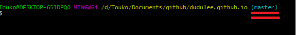
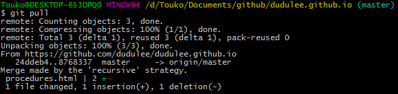
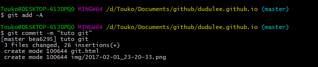
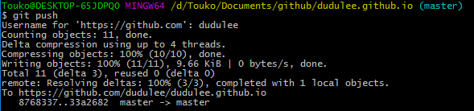
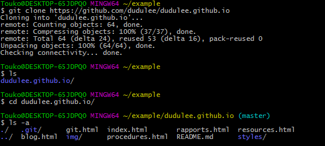

Utilisation de base
On commence par ouvrir le TTY :

On vérifie qu'on est bien dans le bon dossier (en jaune) et qu'un .git est bien présent (master).

{kind=link}
On fait un git pull TOUT DE SUITE!!!

Ça doit être instantané, premier truc que vous faites: git pull !!! Sinon vous allez sauvegarder des changements sans vous être mis à jour au préalable et ça va créer pleins de conflits ingérable. Encore moins en ligne de commande. donc git pull instant!
{kind=link}
Après vos changement et le git pull on peut sauvegarder ces changements :
git add -A puis git commit -m "message".
Le -A c'est pour pas se casser la tête et tout simplement signaler à git qu'il y a eu des changements sur *tous les fichiers*.
Pour le message, c'est simplement pour nous, pouvoir retrouver/retracer/comprendre à quoi correspond chaque commit sans vérifier un par un. C'est de bonne guerre comme dirait un certain Manu.

{kind=link}
Y a plus qu'à envoyer nos changements vers le serveur central avec git push(github) et les autres, qui auront correctement git pull régulièrement recevront également nos changements sous pue :)

{kind=link}
Mise en place : cloner le repo
git clone https://github.com/username/nom-repo et POOF! On a l'exact réplique du repo, avec les gitignores, les HEADS, etc. Si git était déjà configuré correctement, y a plus rien à faire !

vérifiez le (master)en bleu et la présence d'un dossier .git (-a pour voir les fichiers cachés avec ls
{kind=link}
si vous ne l'avez pas encore fait (première config de git) :
git config --global user.email "nom@example.com"
git config --global user.name "nom"
Créer un nouveau repo
créer un dossier avec un fichier dedans
mkdir repo
cd repo
echo "#Hitler did nothing wrong" >> README.md
on créer un dossier .git (l'initialisation)
git init
on ajouter le fichier qu'on a créer, et on commit.
git add README.md
git commit -m "first commit"
on configure le remote ( on le lie à notre repo sur github)
git remote add origin https://github.com/username/repo.git
on push (-u va définir le stream par défaut; origin c'est le nom donnée au repo; master la branche qu'on veut push)
git push -u origin master
un simple git push suffira les prochaines fois.